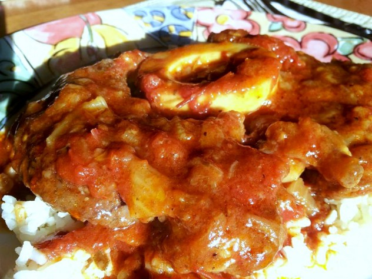

Osso Buco
Ingredients
- 1/4 cup all purpose flour
- 4 meaty slices veal shank, about 1 1/2 inch thik
- 2 Tbsps unsalted butter
- 1 Tbsp olive oil
- Salt ant pepper to taste
- 1 small onion, finely chopped
- 1/2 cup dry white wine
- 1 cup peeled, seeded, and chopped fresh tomatoes or chopped canned Italian peeled tomatoes
- 1 cup chicken broth or meat broth
- 2 garlic cloves, finely chopped
- 2 Tbsp minced fresh flat leaf parsley
- 2 carrots, diced in cubes
- 1 Tbsp tomato paste
- 2 stacks of celery, diced in cubes
- 1 tsp grated lemon zest
Directions
- Cook spaghetti in a large pan of rapidly boiling water
- I a large frying pan heat the oil and garlic gently saute’ the garlic until it is barely golden.
- Do not let it brown or it will taste bitter.
- Stir in the parsley.
- Season with salt and pepper.
- Remove from the heat until the pasta is ready.
- Drain the pasta when it is barely al dente.
- Add it to to the pan with the oil and garlic, and cook together for 2 to 3 minutes, stirring well to coat the spaghetti with the sauce.
- Serve immediately in warmed serving bowl, with Parmigiano and red pepper, if desired.